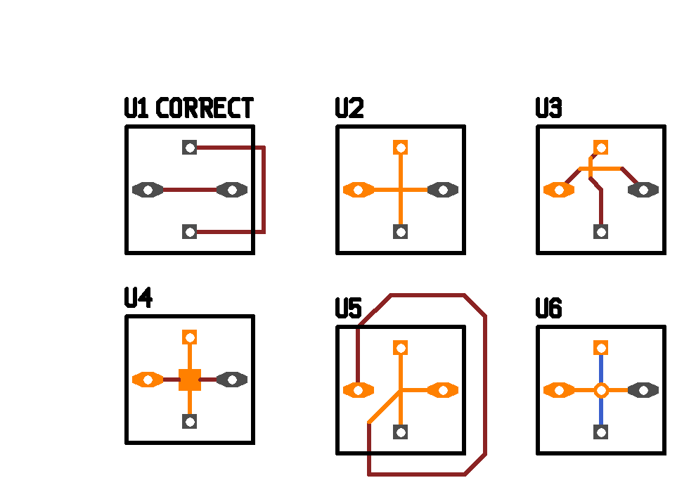

| Main | News | People | Events | pcb-rnd |
|---|
I choose minimal cut for my patch because it doesn't require tracing the full history or any manual administration of nets vs. objects (which I would find inevitable even with manual tagging - directly or indirectly the user needs to be able to change net tags).
The minimal cut is the least amount of object whose removal would resolve the short. It is best demonstrated on an example:

Removing all the marked lines/polys/vias would surely resolve the short (sometimes leaving rat lines behind). Minimal cut is better than randomly removing objects, tho: it guarantees that the minimal amount of objects are to be removed. On a complex board, this place is likely to be close to the place where the problem really is - much closer than the pins/pads.
Since mincut can be expensive on large boards, the feature can be enabled per board (a new PCB flag) and can be disbaled globally (--enable-mincut 0 when starting PCB).